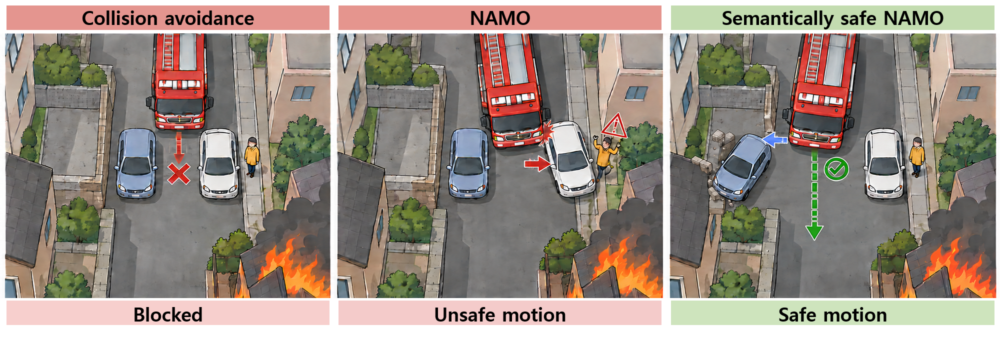
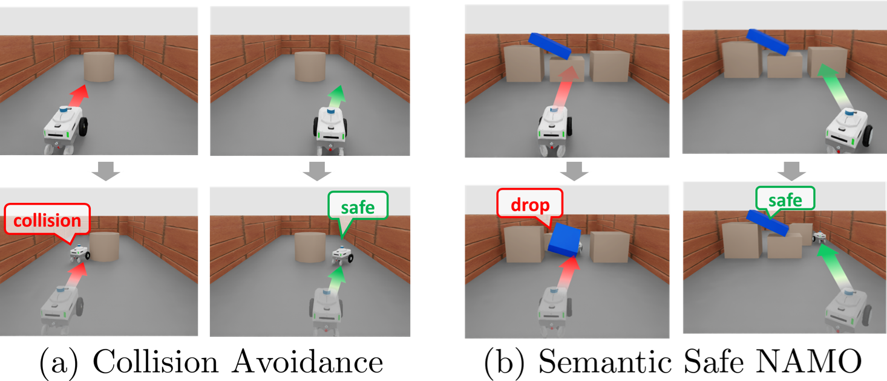
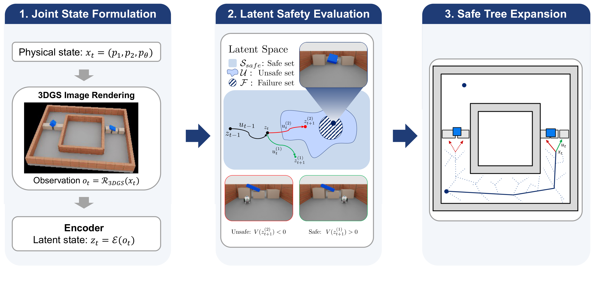
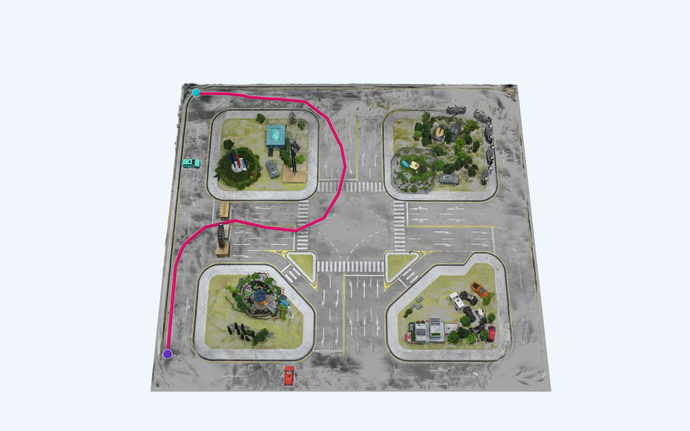
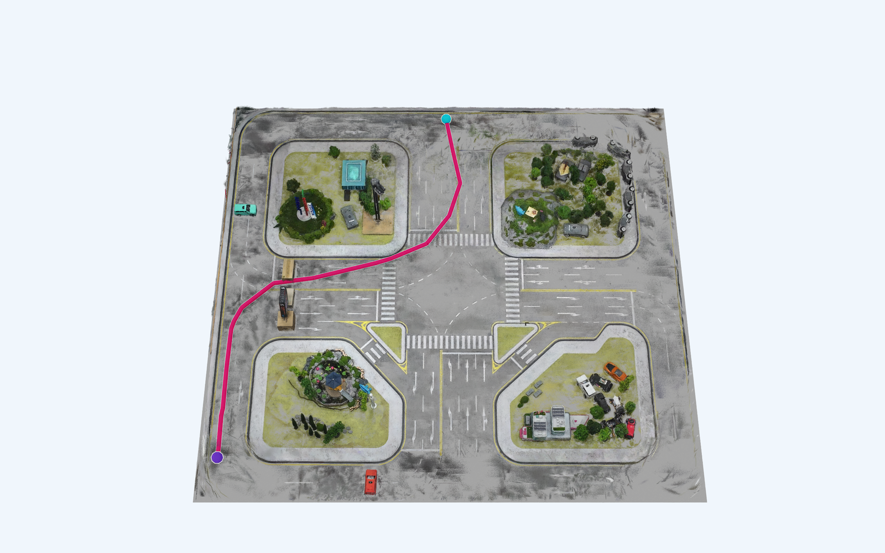
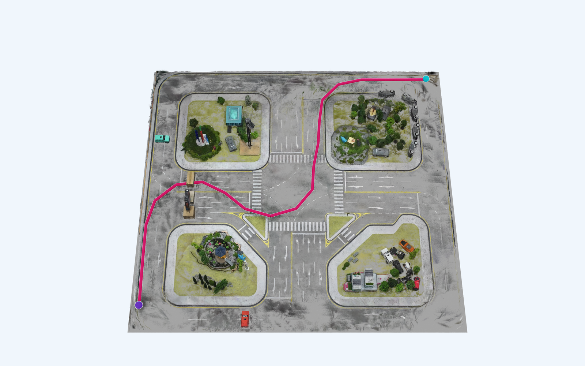
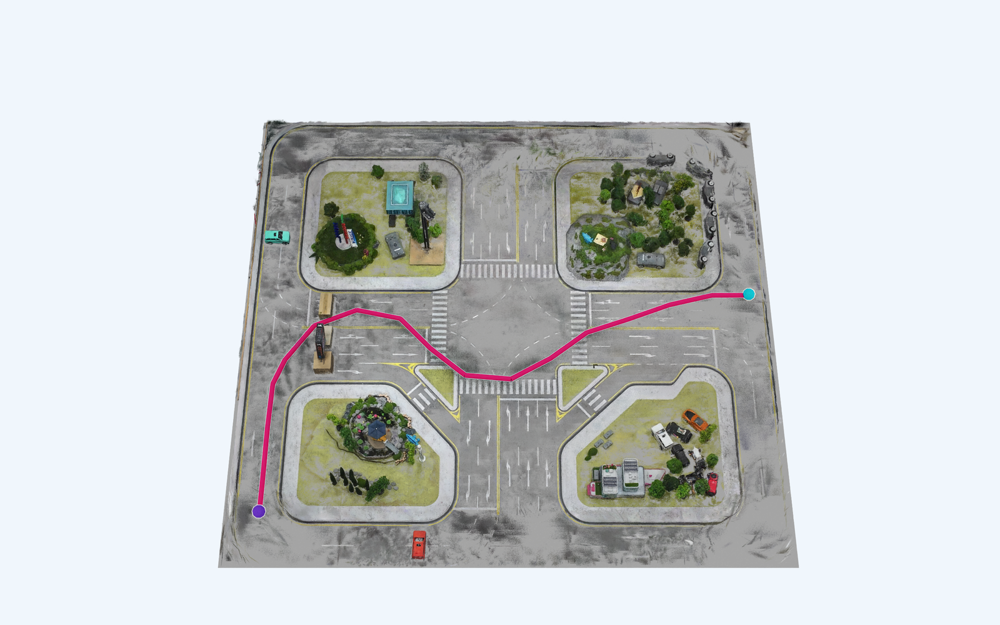
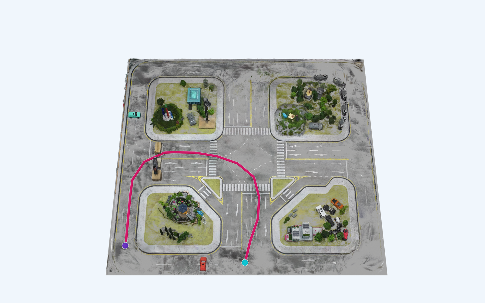
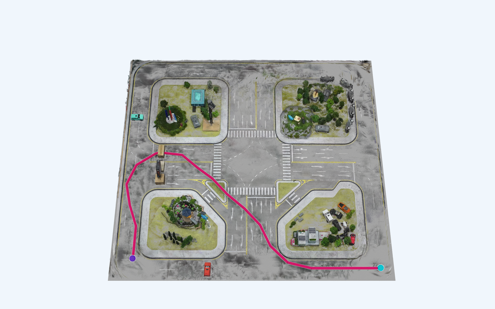

Latent–Safe–RRT
Semantically Safe RRT for Navigation Among Movable Obstacles
Korea Advanced Institute of Science and Technology
01 / MOTIVATION
Safe and unsafe contact

Problem setting

Single-block contact
The robot moves the single block while the supported blue block stays in place.
Support-block contact
Contact with a supporting block causes the blue block above it to fall.
Actual Isaac Sim physics recordings. Borders show the observed safety label: green before failure, red after failure.
02 / METHOD
Latent safety for planning
Camera views rendered in the 3D Gaussian map are encoded into latent states. A learned reachability value determines which RRT branches are accepted.

03 / SIMULATION
Simulation results
Training environment
Planning in the movable-block corridor used for learning.
Unseen environment
Transfer to a ring layout not seen during training.
04 / REAL WORLD
Real-world results
01 / CAPTURE
Testbed recording
Video used to reconstruct the testbed in 3DGS.
02 / RECONSTRUCT
3D Gaussian reconstruction
Original and pruned reconstructions of the same testbed.
03 / PLANNING
Planned routes
Routes from six starting positions to goal 7 in the reconstructed testbed.






04 / EXECUTION
Robot demonstrations
The planning results above are 3DGS visualizations. The six videos below are recordings from the physical testbed.